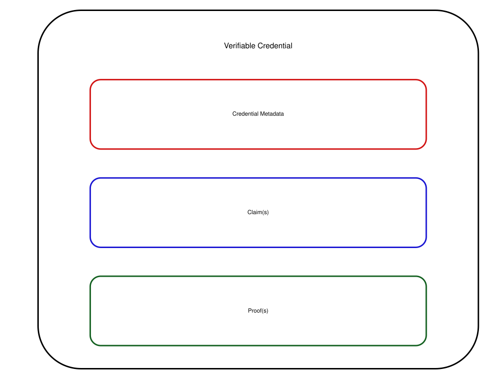

Credentials are a part of our daily lives; driver's licenses are used to assert that we are capable of operating a motor vehicle, university degrees can be used to assert our level of education, and government-issued passports enable us to travel between countries.
The family of W3C Recommendations for Verifiable Credentials, described in this overview document, provides a mechanism to express these sorts of credentials on the Web in a way that is cryptographically secure, privacy respecting, and machine-verifiable.
Status of This Document
This section describes the status of this
document at the time of its publication. A list of current W3C
publications and the latest revision of this technical report can be found
in the
W3C standards and drafts index.
This document provides a non-normative, high-level overview for W3C's Verifiable Credential specifications and serves as a roadmap for the documents that define, describe, and secure these credentials.
It is not the goal of this document to be very precise, nor does this overview cover all the details.
The intention is to provide users, implementers, or anyone interested in the subject, a general understanding of the concepts and how the various specifications, published by the Verifiable Credentials Working Group, fit together.
1.1 High Level View of the Specifications
Figure 1 provides an overview of the main building blocks for Verifiable Credentials, including their (normative) dependencies.
For more details, see the subsequent sections in this document.
The Verifiable Credentials Data Model v2.0 [VC-DATA-MODEL-2.0] specification, which defines the core concepts that all other specifications depend on, plays a central role.
The model is defined in abstract terms, and applications express their specific credentials using a serialization of the data model.
The current specifications mostly use a JSON serialization; the community may develop other serializations in the future.
When Verifiable Credentials are serialized in JSON, it is important to trust that the structure of a Credential may be interpreted in a consistent manner by all participants in the verifiable credential ecosystem.
The Verifiable Credentials JSON Schema Specification [VC-JSON-SCHEMA] defines how [JSON-SCHEMA] can be used for that purpose.
Credentials can be secured using two different mechanisms: enveloping proofs or embedded proofs.
In both cases, a Credential is cryptographically secured by a proof (for example, using digital signatures).
In the enveloping case, the proof wraps around the Credential, whereas embedded proofs are included in the serialization, alongside the Credential itself.
The Bitstring Status List v1.0 [VC-BITSTRING-STATUS-LIST] specification defines a privacy-preserving, space-efficient, and high-performance mechanism for publishing the status of a specific Verifiable Credential, such as its suspension or revocation, through the use of bitstrings.
Figure 1
Verifiable Credentials Working Group Recommendations
Note
As of May 2025, all but two of these documents have been published as W3C "Recommendations", which is the W3C terminology for Web Standards.
The two exceptions are the Verifiable Credentials JSON Schema Specification and the Data Integrity BBS Cryptosuites v1.0 specifications; though technically complete, they are still "Candidate" Recommendations.
The reasons are different. The former has not yet been implemented by at least two mutually independent implementations (which is the requirement to be published as standards) whereas the latter has to wait until the underlying cryptographic technique (i.e., The BBS Signature Scheme) is finalized by the IETF.
It is expected that these two documents will be published as Web Standards soon.
2. Ecosystem Overview
The Verifiable Credential specifications rely on an ecosystem consisting of entities playing different "roles".
The main roles are:
Issuer
An entity that creates a Verifiable Credential, consisting of a series of statements related to its subject.
An example is a university that issues credentials for university degrees or certificates for alumni.
Holder
An entity that possesses one or more Credentials, and that can transmit presentations of those
Verifiable Credentials to third parties.
An example may be the person who "holds" his/her own educational degrees.
Another example may be a digital wallet that contains several Credentials on someone's behalf.
Verifier
An entity that performs verification on a Verifiable Credential to check the validity, consistency, etc., of a Credential.
An example may be an employer's digital system that checks the validity of a university degree before deciding on the
employment of a person.
For a more precise definition of these roles, as well as other roles, see the relevant section in the data model specification.
Figure 2
The roles and information flows forming the basis for the VC Data Model.
3. Verifiable Credentials Data Model
3.1 Basic Concepts
3.1.1 Claims, Properties
A core concept is "claims": statements made about various entities, referred to as "subjects".
Subjects may be a holder, an issuer, or a verifier as listed above, but may also any be another person (e.g., the person holding a university degree), an animal, an abstract concept, etc.
Claims may also be on a Credential itself, such as issuance date, validity periods, etc.
(Such claims are also loosely referred to as "credential metadata".)
Claims are expressed using "properties" referring to "values".
Values may be literals, but may also be other entities referred to, usually, by a [URL].
In that case, that entity may become the subject of another claim; these claims, together, form a "graph" of claims that represents a Credential.
(See Figure 6 for an example of such a graph represented graphically.
For more complex examples, refer to the Verifiable Credentials Data Model v2.0 specification itself.)
Figure 3
The basic structure of a claim with (in this case) a literal value.
The Verifiable Credentials Data Model v2.0 document specifies a number of standard properties. These include, for example, credentialSubject, type, issuer, or validFrom.
Developers may define their own properties to express specific types of Credentials, like a driving license, a university degree, or a marriage certificate.
3.1.2 Verifiable Credentials
A Credential is a set of one or more claims made by the same entity.
Credentials might also include an identifier and metadata to describe properties of the Credential, such as a reference to the issuer, the validity date, a representative image, the revocation mechanism, and so on.
A Verifiable Credential is a set of claims and metadata that also includes verification mechanisms that cryptographically prove who issued it, ensures that the data has not been tampered with, etc.
For a more detailed description of abstract Verifiable Credentials, with examples, see the relevant section in the data model specification.

Figure 4
Basic components of a Verifiable Credential.
3.1.3 Verifiable Presentations
Enhancing privacy is a key design feature of Verifiable Credentials.
Therefore, it is important, for entities using this technology, to be able to express only the portions of their persona that are appropriate for a given situation.
The expression of a subset of one's persona is called a Verifiable Presentation.
Examples of different personas include a person's professional persona, their online gaming persona, their family persona, or an incognito persona.
A Verifiable Presentation is created by a holder, can express data stemming from multiple Verifiable Credentials, and can contain additional metadata in forms of additional claims.
They are used to present claims to a verifier.
It is also possible to present Verifiable Credential directly.
A Verifiable Presentation is usually short-lived, it is not meant to be stored for a longer period.
For a more detailed description of abstract Verifiable Presentations, with examples, see the relevant section in the data model specification.
Figure 5
Basic components of a verifiable presentation.
3.2 Serialization in JSON
In the [VC-DATA-MODEL-2.0] specification, as in the other documents, Verifiable Credentials and Presentations are mostly expressed in JSON [RFC7519], more specifically [JSON-LD11].
In this serialization, properties of claims are represented as JSON names, and values as JSON literals or objects.
Subjects of claims are either explicitly identified by an id property, or implicitly by appearing as an object of another claim.
Standard properties defined by the [VC-DATA-MODEL-2.0] form a distinct set of JSON names, referred to as a (standard) vocabulary.
An important characteristic of Verifiable Credentials in JSON-LD is that it favors a decentralized and permissionless approach to extend to a new application area through application-specific set of properties, i.e., vocabularies, distributed on the Web.
Anyone can "publish" such a vocabulary, following some rules described in the extensibility section of the specification.
The following JSON-LD code is an example for a simple Credential. It states that the person named "Pat", identified by https://www.example.org/persons/pat, is an alumni of the Example University (identified by did:example:c276e12ec21ebfeb1f712ebc6f1).
The Credential is valid from the 1st of January 2010, and is issued by an entity identified by did:example:2g55q912ec3476eba2l9812ecbfe.
Most of the properties in the Credential are from the standard Verifiable Credentials vocabulary (identified by https://www.w3.org/ns/credentials/v2), but some terms (like alumniOf, AlumniCredential) are added by the application-specific vocabulary referred to by https://www.w3.org/ns/credentials/examples/v2.
Figure 6
Credential in Example 1 represented as a collection of claims.
Note
The Credential in Example 1 is used throughout this document to show how to apply additional features defined by the various specifications.
The Credential in Example 1, issued by Example University, is stored by a holder (who may be a person, a digital wallet, or any other entity). On request, the holder may "present" a Credential to a verifier, encapsulated in a Verifiable Presentation. This is how the result may look like in the JSON-LD serialization:
Note that the holder could have presented several Credentials within the same presentation or create a new Credential by either combining it with others, or removing some claims as irrelevant for the specific context.
3.3 Checking Structure with JSON Schemas
A significant part of the integrity of a Verifiable Credential comes from the ability to structure its contents so that all three parties — issuer, holder, verifier — may have a consistent mechanism of trust in interpreting the data that they are provided with.
One way of doing that is to use [JSON-SCHEMA] to check the structural validity of the Credential.
The Verifiable Credentials JSON Schema Specification [VC-JSON-SCHEMA] specification adds standard properties to express the association of a Credential with a JSON Schema.
Using this JSON Schema, a verifier can check whether the Credential is structurally valid or not.
For security reasons one may want to go a step further: check/verify the JSON Schema itself to see if, for example, it has been tampered with.
This can be done by referring to the JSON Schema indirectly through a separate Verifiable Credential.
The reference to such a Verifiable Credential looks very much like Example 3 except for the value of the type:
Example 5: A Simple Credential with a JSON Schema Credential
In this case, when dereferenced, the URL https://university.example/Credential-schema-credential should return a Verifiable Credential, whose credentialSubject property refers to the required JSON Schema (i.e., https://university.example/Credential-schema.json).
See the example in the Verifiable Credentials JSON Schema Specification specification for an example and for further details.
4. Securing Credentials
4.1 Enveloping Proofs
Enveloping proofs of Credentials, defined by this Working Group, are based on JSON Object Signing and Encryption
(JOSE), CBOR Object Signing and Encryption (COSE) [RFC9052], or Selective Disclosure for JWTs [rfc9901].
These are all IETF specifications, or groups of specifications (like JOSE, that refers to JWT [RFC7519], JWS [RFC7515], or JWK [RFC7517]).
The Securing Verifiable Credentials using JOSE and COSE [VC-JOSE-COSE] recommendation defines a "bridge" between these and the Verifiable Credentials Data Model v2.0,
specifying the suitable header claims, media types, etc.
In the case of JOSE, the Credential is the "payload" (to use the IETF terminology).
This is preceded by a suitable header whose details are specified by the relevant
section of the [VC-JOSE-COSE] specification.
These are encoded, concatenated, and signed, to be transferred in a compact form by one entity to another
(e.g., sent by the holder to the verifier).
All the intricate details on signatures, encryption keys, etc., are defined by the IETF specifications; see Example 6 for a specific case.
The usage of COSE [RFC9052] is similar to JOSE, except that all structures are represented in CBOR [RFC8949].
From the Credentials point of view, however, the structure is similar insofar as the Credential (or the Presentation)
is again the payload for COSE.
The use of CBOR means that the final representation of the Verifiable Credential (or Presentation) can have a significantly reduced footprint which can be, for example, shown in a QR Code.
The [rfc9901] is a variant of JOSE, which allows for the selective disclosure of individual claims.
Claims can be selectively hidden or revealed to the verifier, but all claims are cryptographically
protected against modification.
This approach is obviously more complicated than the JOSE case but, from the Credentials point of view, the structure
is again similar.
The original Credential is the payload for SD-JWT; and it is the holder's responsibility to use the SD-JWT
when presenting the Credential to a verifier using selective disclosure.
4.1.1 Example: the Core Example Secured with JOSE and COSE
Example 6 shows the Credential example shown in Example 1,
enriched with a reference to a JSON Schema in Example 3.
It is secured by two different enveloping proofs, namely JOSE and COSE.
The operation of Data Integrity is conceptually simple. To create a cryptographic proof, the following steps are performed: 1) Transformation, 2) Hashing, and 3) Proof Generation.
Transformation is a process described by a transformation algorithm that takes input data and prepares it for the hashing process.
In the case of data serialized in JSON this transformation includes the removal of all the artifacts that do not influence the semantics of the data, such as spaces, new lines, the order of JSON names, etc. (a step often referred to as canonicalization).
In some cases the transformation may be more involved.
Hashing is a process described by a hashing algorithm that calculates an identifier for the transformed data using a
cryptographic hash function.
Typically, the size of the resulting hash is smaller than the data, which makes it more suitable for complex cryptographic functions like digital signatures.
Proof Generation is a process described by a proof method that calculates a value that protects the
integrity of the input data from modification or otherwise proves a certain desired threshold of trust.
A typical example is the application of a cryptographic signature using asymmetric keys, generating the signature of the data.
Verification of a proof involves repeating the same transformation and hashing steps on the verifier's side and, depending on the proof method, validating the newly calculated hash value with the proof associated with the data.
In the case of a digital signature, this means verifying, using the cryptographic algorithms associated with the asymmetric keys, that the proof value indeed signs the newly calculated hash.
4.2.2 Data Integrity of Credentials
The Verifiable Credential Data Integrity 1.0 [VC-DATA-INTEGRITY] specification starts with the general structure and defines a set of standard properties describing the details of the proof generation process.
The specific details (i.e., the transformation, hash, and/or proof method algorithms) are defined by separate cryptosuites.
The Working Group has defined a number of such cryptosuites as separate specifications, see 4.2.3 Cryptosuites below.
The core property, in the general structure, is called proof.
This property embeds a claim in the Credential, referring to a separate collection of claims (referred to as a Proof Graph) detailing all the claims about the proof itself:
Example 7: Skeleton of a proof added to a Credential
Note the proofValue property, whose object is the result of the proof generation process.
Note
The proof value is for illustrative purposes only, and does not reflect the result of real cryptographic calculations.
The definition of proof introduces a number of additional properties.
Some of these are metadata properties on the proof itself, like created, expires, or domain.
Others provide the necessary details on the proof generation process itself, like cryptosuite, nonce (if needed), or verificationMethod that usually refers to cryptographic keys.
The exact format of the public keys, when used for Credentials, is defined in the [CID-1.0] specification, and is based on either the JWK [RFC7517] format or a Multibase encoding of the keys, called Multikey.
Details of the key values are defined by other communities (IETF, cryptography groups, etc.) and are dependent on the specific cryptographic functions they operate with.
It is possible to embed several proofs for the same Credential.
These may be a set of independent proofs (based, for example, on different cryptosuites, to accommodate to the specificities of different verifiers), but may also be a "chain" of proofs that must be evaluated in a given order.
A proof may also specify its "purpose" via the proofPurpose property: different proofs may be provided for authentication, for assertion, or for key agreement protocols.
These details are also defined in the [CID-1.0] specification.
The verifier is supposed to choose the right proof depending on the purpose of its own operations, which is yet another possible reason why the holder or the issuer may provide several proofs for the same Credential.
Figure 8 provides an overall view of the six cryptosuites defined by the three recommendations.
They all implement the general pipeline of proof generation as described in section 4.2.1.
As shown on the figure, one axis of differentiation is the data transformation function, i.e., the canonicalization of the JSON serialization: two cryptosuites use JSON Canonicalization (JCS) [RFC8785], while the other four use RDF Dataset Canonicalization (RDFC-1.0) [RDF-CANON].
The other axis is whether the cryptosuite provides selective disclosure, which is the case for two of the six
cryptosuites.
A common characteristic of all these cryptosuites is that keys must always be encoded using the Multikey encoding.
For the ECDSA case the keys may also carry the choice of the hash functions to be used by the proof generation algorithm.
This provides yet another differentiation axis among cryptosuites.
Note
Applications may define their own cryptosuites by applying different transformation and/or cryptographic signature schemes in similar patterns.
For example, it would be possible to define a cryptosuite using the SM2 algorithm [RFC9563] instead of, say, EdDSA.
4.2.3.1 Full Disclosure Schemes
The two EdDSA cryptosuites, as well as ecdsa-rdfc-2019 and ecdsa-jcs-2019, follow a simple version of the proof generation pipeline as described in section 4.2.1: the Credential is canonicalized (using either JCS or RDFC-1.0) and the result is hashed (using the hash functions as defined by the signature key).
The calculation of the hash values depend on the canonicalization method: in the JCS case the canonical JSON data is hashed directly, whereas
in the RDFC-1.0 case the individual canonicalized claims are first sorted and then concatenated before being hashed.
However, before signing the hash values, there is an extra twist: the same pipeline is also used on a set of claims called proof options, i.e., all the claims
of the proof graph exceptproofValue.
This set of claims is also canonicalized and hashed, following the same process as for the Credential itself, yielding a second hash value.
It is the concatenation of these two values that is signed by EdDSA or ECDSA, respectively, producing the value for the proofValue property.
By doing so, the various proof metadata, as well as the public key reference itself, are also signed and become verifiable.
4.2.3.2 Selective Disclosure Schemes
The ecdsa-sd-2023 and bbs-2023 cryptosuites provide selective disclosures of individual claims.
In both cases, the process separates the base proof (calculated by the issuer for the holder), and the derived proof (which is typically calculated by the holder when selectively presenting credential claims to the verifier).
To calculate the base proof, the Credential is supplemented with extra information that separates the mandatory and non-mandatory claims.
Using that information, the issuer's transformation step in section 4.2.1 produces a
data structure containing the hash of the proof options (much like in the case of the full disclosure schemes) and of the set of mandatory claims, plus the identification of mandatory claims.
Some elements of this data structure are then signed, the resulting structure is converted into CBOR, and
encoded to provide as a multibase-encoded proofValue.
The derived proof is generated by the holder upon a request containing JSON pointers [RFC6901] identifying the claims to be disclosed.
To answer the request the information in the proofValue is used to create a reveal document, i.e., a new Credential containing the mandatory claims and the requested non-mandatory claims.
Finally, the holder generates a derived proof for this reveal document, which is sent to the verifier.
The verifier should be able to test the proof of the reveal document without having access to the original data and its (base) proof.
With ecdsa-sd-2023, each non-mandatory claim is signed separately by the issuer using a common, ephemeral ECDSA secret key, whose public counterpart is part of the both the base and derived proof values. That can be used to check the disclosed non-mandatory claims.
The bbs-2023 cryptosuite relies on the cryptographic properties of the BBS scheme itself, which support the creation of proofs for the verification of selectively disclosed data.
This is based on the mathematical nature of the BBS scheme: the BBS signature of all the claims (generated by the issuer and part of the base proof) can be reused by the holder to generate a BBS Proof of the subset of the claims (which is part of the derived proof). The BBS specific verification step ensures the required trust.
4.2.4 Example: the Core Example Secured with EdDSA and ECDSA
Example 8 shows the Credential example, shown in Example 1 and enriched with a reference to a JSON Schema in Example 3.
It is secured by two different embedded proofs, using the ecdsa-rdfc-2019 and eddsa-rdfc-2022 cryptosuites.
Example 8: EdDSA and ECDSA proofs added to a Credential
Note that the value of the verificationMethod property may have been the public key itself, instead of a reference to a separate resource containing the key.
5. Bitstring Status List
It is often useful for an issuer of Verifiable Credentials to link to a location where a verifier can check whether a credential has been suspended or revoked.
This additional resource is referred to as a "status list".
The simplest approach for a status list, where there is a one-to-one mapping between a Verifiable Credential and a URL where the status is published, raises privacy as well as performance issues.
In order to meet privacy expectations, it is useful to bundle the status of large sets of credentials into a single list to help with group privacy.
However, doing so can place an impossible burden on both the server and client if the status information is as much as a few hundred bytes in size per credential across a population of hundreds of millions of holders.
The Bitstring Status List v1.0 [VC-BITSTRING-STATUS-LIST] specification defines a highly compressible, highly space-efficient bitstring-based status list mechanism.
Conceptually, a bitstring status list is a sequence of bits.
When a single bit specifies a status, such as "revoked" or "suspended", then that status is expected to be true when the bit is set and false when unset.
One of the benefits of using a bitstring is that it is a highly compressible data format since, in the average case, large numbers of credentials will remain unrevoked.
If compressed using run-length compression techniques such as GZIP [RFC1952] the result is a significantly smaller set of data: the default status list size is 131,072 entries, equivalent to 16 KB of single bit values and, when only a handful of verifiable credentials are revoked, GZIP compresses the bitstring down to a few hundred bytes.
Figure 9
A visual depiction of the concepts outlined in this section.
The specification introduces the credentialStatus property, as well as some additional sub-properties, that should be used to add this additional information to a Verifiable Credential.
Example 10 shows the example from Example 8, combined with the information on the credential status: the purpose of that status information, the reference to the bitstring, and the index into this bitstring for the enclosing credential:
Example 10: Verifiable Credential with a Reference to a Status List
The statusListCredential property, when dereferenced, should return a separate Credential for the status list.
The status list itself is the subject of that Credential (which, of course, can also be signed). An example is:
Example 11: A Credential for a Bitstring Status List
The core property in this case is encodedList, which is a base64url encoded version of the GZIP compressed bitstring status list.
6. Additional Publications
6.1 Working Group Notes
The VC Working Group has also published, and maintains, a few additional documents in the form of Working Group Notes. Although these are not formal standards, they represent consensus among the Working Group Participants.
These documents are:
The use cases outlined in this document were, and are, instrumental in making progress toward standardization and interoperation of both low– and high–stake claims, with the goals of storing, transmitting, and receiving digitally verifiable proof of attributes such as qualifications and achievements.
The use cases focus on concrete scenarios that the technology defined by the group aims to address (including for future revisions).
This document serves as an unofficial list of all known Verifiable Credential specifications whether they are released
by a global standards setting organization, a community group, an open source project, or an individual.
6.2 Standard Vocabularies
As explained in the introductory sections, the specifications define a number of standard vocabularies, i.e., standard sets of properties used as JSON names.
These are used by Verifiable Credentials to ensure interoperability.
Although the formal specifications of these terms are provided by the respective specifications, the vocabularies are also published as separate documents.
This is done for an easier reference and overview, and these documents are also important if Credentials are used by applications based on RDF [RDF11-CONCEPTS].
These vocabulary documents are:
Example 12 shows the Credential example used throughout this document, enriched with a
reference to a JSON Schema and to the status information.
It is secured via different securing mechanisms defined for Verifiable Credentials.
Example 12: Verifiable Credential with a Reference to a Credential Schema and to a Status List
The previous sections provided an overview of the Verifiable Credential ecosystem.
This section provides more details about how the ecosystem is envisaged to operate.
Figure 10
Lifecycle of a single Verifiable Credential: the roles and information flows for this specification.
The roles and information flows in the Verifiable Credential ecosystem are as follows:
An issuer issues a Verifiable Credential to a holder.
Issuance always occurs before any other actions involving a Credential.
A holder might transfer one or more of its Verifiable Credentials to another holder.
A holder presents one or more of its Verifiable Credentials to a verifier, optionally inside a Verifiable Presentation.
A verifier verifies the authenticity of the presented Verifiable Presentation and Verifiable Credentials and checks any credential status (if present) of the Verifiable Credentials.
After verification, a verifier validates the relevant claims in presented Verifiable Credentials, using their own business logic to evaluate which issuers are appropriate for which claims and which subjects are appropriate for the requested use.
An issuer might revoke a Verifiable Credential.
A holder might delete a Verifiable Credential.
Note
The order of the actions above is not fixed, and some actions might be taken more than once. Such action-recurrence might be immediate or at any later point.
The most common sequence of actions is envisioned to be:
An issuer issues a verifiable credential to a holder.
The holder presents the verifiable credential to a verifier.
The verifier verifies the verifiable credential.
The verifier validates claims made in the verifiable credential against the verifier's business rules.
The verifier applies valid claims.
These specifications do not define any protocol for transferring Verifiable Credentials or Verifiable Presentations, but assuming other specifications do specify how they are transferred between entities, then the Verifiable Credential Data Model is directly applicable.
These specifications neither define an authorization framework nor does it restrict the business decisions that a verifier might make after verifying a Verifiable Credential or Verifiable presentation.
Rather, verifiers apply their own business rules before treating any claim as valid, taking into account the holder, the issuer of the Verifiable Credential, the claims of the Verifiable Credential, and the verifier's own policies.
In particular, sections Terms of Use in the Data Model specification, and the Subject-Holder Relationships section in the Verifiable Credentials Implementation Guide [VC-IMP-GUIDE] specify how a verifier can determine:
Whether the holder is a subject of a Verifiable Credential.
The relationship between the subject and the holder.
Whether the original holder passed a Verifiable Credential to a subsequent holder.
Any restrictions using the Verifiable Credentials by the holder or verifier.
![Diagram illustrating the structure of the Verifiable Credential (VC) specifications, using boxes labeled with references to the specification. Arrows on the diagram connect some of the boxes to represent (normative) dependencies. The box labeled as the VC Data Model is at the top-center of the diagram. Additional component boxes — such as JSON Schema for structural checking; Bitstring Status List for publishing status information; and Controlled Identifiers for verification methods and relationships — are related to the VC Data Model. The box for securing mechanisms contain separate boxes for embedded proofs, on the left, and enveloping proofs, on the right. The box for embedded proofs contains a box labeled as Data Integrity, which depends both on the VC Data Model and on Controlled Identifiers, as well as boxes for the ECDSA, EdDSA, and BBS Cryptosuites, supporting different elliptic curves and signature schemes; all of these depend on Data Integrity, and the BBS Cryptosuites also depend on ECDSA. The enveloping proofs box contains a single box labeled as 'JOSE and COSE ... using JWS, SD-JWT, or CBOR'; as with Data Integrity, this depends both on the VC Data Model and on Controlled Identifiers.](diagrams/VCWG_specifications.svg)
![Diagram showing an example of a Verifiable Credential. At top, there is an ellipse labeled 'https://university.example/Credential123 (Type: VerifiableCredential, ExampleAlumniCredential)'. This ellipse has two arrows going down. One arrow is nearer the right side of the ellipse, is labeled as 'validFrom', angles to the right, and terminates at a box labeled as '2010-01-01T00:00:00Z'. The second arrow is at the middle of the ellipse, is labeled as 'credentialSubject', and ends at an ellipse labeled as 'https://www.example.org/persons/pat'. This ellipse has two more arrows going down. One arrow is nearer the right side of the ellipse, is labeled as 'name', and angles to the right, terminating at a box labeled as 'Pat'. The second arrow is nearer the left side of the ellipse, labeled as 'alumniOf', and ends at another ellipse labeled as 'did:example:c276e12ec21ebfeb1f712ebc6f1'. This ellipse has a final arrow going down, which is labeled as 'name' and ends at a final box labeled as 'Example University'.](diagrams/credential_example.svg)
![The image is a flowchart showing the categorization of various cryptographic suites and their respective canonicalization methods. The chart branches from an initial box labeled 'Cryptosuites', to three main cryptosuite documents: 'EdDSA (based on Edwards curves)', 'ECDSA (based on ECDSA curves)', and 'BBS (based on BBS schemes)'. The EdDSA suite further divides into two specific cryptosuites: 'eddsa-rdfc-2022 (using RDFC-1.0 for canonicalization)' and 'eddsa-jcs-2022 (using JCS for canonicalization)'. The ECDSA suite branches into three specific cryptosuites: 'ecdsa-rdfc-2019 (using RDFC-1.0 or canonicalization)', 'ecdsa-jcs-2019 (using JCS canonicalization)', and 'ecdsa-sd-2023 (using RDFC-1.0 for canonicalization and providing selective disclosure schemes)'. The BBS suite splits into one method: 'bbs-2023 (using RDFC-1.0 for canonicalization and providing selective disclosure schemes)'. There is an additional dotted lozenge, labeled 'Selective disclosure schemes', which contains the 'ecdsa-sd-2023' and 'bbs-2023' documents.](diagrams/cryptosuites.svg)
![This diagram shows a horizontal series of adjacent boxes: on the left, there are 14 boxes, and on the right, 3 boxes, with these two groups connected by four dot characters. The groups of boxes are annotated on the right by the text '16KB'. All boxes are filled with one color (green), except for those in the 5th and 10th positions, that are filled with a different color (red). These two red boxes are labeled as 'Revoked Credentials'. All of these elements are annotated, beneath, by the remark 'ZLIB Compression' and '135 bytes', with a small icon representing computer data.](diagrams/BitstringStatusListConcept.svg)